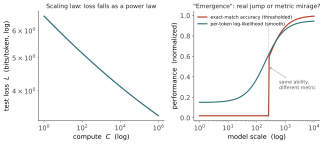

本页目录
机器 I · 涌现、Scaling 与世界模型
对标：Kaplan 2020 / Hoffmann 2022（scaling laws）、Wei 2022（emergent abilities）、Schaeffer 2023（mirage 反驳）、Li 2023（Othello-GPT）、Anthropic 机制可解释性 ｜ 前置：info-04（压缩=预测）、🔗 ai-06/07（Transformer、scaling）、mean-03（接地）｜ 证据地位：scaling 律【实】；"涌现"是否真实【争】；世界模型【实/前沿】。 线六回到机器——甲问（预测→能力）的最前沿。三个问题：为什么"堆规模"能持续变强（scaling）？"涌现"是真质变还是度量假象（Schaeffer 之争）？纯预测出来的到底是世界模型还是幻觉（Othello-GPT）？这一线也是把前五线的争论交还给可实验机器的地方。
1. Scaling 律：可预测的变强
现代 LLM 最坚实的经验事实（【实】）：测试损失随规模按幂律下降。在模型参数 \(N\)、数据 \(D\)、算力 \(C\) 足够且平衡时，交叉熵损失 \(L\)（回忆 info-01：损失就是每 token 的 bits）满足

深意（接 info-04）：损失就是压缩残差。scaling 律说的是——投入越多算力，模型把语言压得越好，且好的程度可预测。这把"预测下一符号 → 能力"从奇迹变成工程曲线。但它也留下悬念：损失平滑下降，为什么某些能力看起来是突然出现的？
2. 涌现：真相变，还是度量假象？
Wei 2022 报告了涌现能力（emergent abilities）：某些任务（多步算术、特定推理）在小模型上准确率约等于零，过了某个规模突然跃升——看似质变、相变、"智能的门槛"。这个叙事极有冲击力，也极易被神秘化。
Schaeffer 2023 的冷水（本页关键【争】）：这些"突现"很多是度量假象（mirage）。用精确匹配准确率（要求多步全对，非线性、阈值化）去看，能力自然显得"要么全错要么突然全对"；换成平滑指标（每-token 对数似然、部分credit），同一能力其实是连续、渐进改进的（图 ai-1 右）。"涌现"可能主要在度量里，不在模型里。
怎么判？ 这是一次绝好的方法论训练： - 突现是关于什么的陈述？——模型内部能力，还是我们测量它的方式？两者要分开。 - 换度量会不会让台阶消失？会 → 假象成分大；不会（真有不连续的内部机制）→ 才是真涌现。 - 少数能力（如某些依赖离散组合的）可能是真的相变，多数不是——别一概而论，也别一概祛魅。
分档：scaling 律【实】；"存在戏剧性涌现质变" = 【争】，多数经不起换度量；"某些能力有真实的、机制上的不连续" = 开放【前沿】。
3. 从预测到世界模型：Othello-GPT
甲问最深的一问：预测下一符号，模型内部到底建了什么？只是表层统计（随机鹦鹉），还是关于世界的结构（世界模型）？ 这不再是哲学空谈——有了可做的实验（承 mean-03 §4 的反方弹药）：
Othello-GPT（Li 2023，本页的实证心脏）：只用黑白棋的走子序列（纯字符，从不告诉模型"这是棋盘"）训练一个 GPT 预测下一步。然后用探针（probe）查它的内部激活——
- 发现模型内部涌现出一个可解码的棋盘状态表征（每格是黑/白/空），尽管训练目标只是预测下一个字符；
- 更强的证据：干预这个内部表征（人为翻转某格），模型的后续预测随之改变——说明这个世界模型是因果起作用的，不是附带的相关物。
意义（撬动轴 III）：这是"纯序列预测能反解出世界结构"的干净证据。它不证明 LLM 理解一切，但证明"预测 → 世界模型"这一步在原则上、在受控世界里确实发生。mean-03 的接地裂缝，被这类实验填上了一块——至少在指涉接地层（世界状态被内部表征对应）。
4. In-context learning：又一个未解的涌现
另一个真实且深刻的现象：上下文学习（in-context learning, ICL）——不更新任何权重，仅凭 prompt 里的几个示例，模型就能学会新任务。这像是模型在推理时做了某种"学习"。
- 一种解释：Transformer 在前向传播里隐式实现了某种优化/回归（有理论工作显示注意力可模拟梯度下降的一步）。
- 它把"学习"从训练时渗透到了推理时——预测机制里藏着元学习。
- 为什么纯预测训练会顺带长出 ICL，仍是开放问题，也是"预测→能力"最迷人的一环。
这对你研究的价值：ICL 是"能力从预测涌现"的一个可控、可探测的样本。它比"通用智能涌现"这种大词具体得多——你能设计任务、量化 few-shot 曲线、探内部机制，把甲问做成实验。
5. 机制可解释性：打开黑箱（Anthropic 路线）
要真回答"模型里装了什么"，得打开它。机制可解释性（mechanistic interpretability）试图把网络逆向工程成人类可懂的电路（circuits）与特征（features）：
- 叠加（superposition）：模型在维度不够时，把多个特征叠在同一批神经元里——这是"神经元不可解释"的一大原因。
- 稀疏字典学习 / SAE：把叠加的激活拆解回单义的可解释特征（"金门大桥特征""语法主谓一致特征"），是近年的主要突破方向。
- 归纳头（induction heads）：被发现是 ICL 的一个机制基础——一个可定位的电路，负责"看到 AB…A 就预测 B"。
为什么这是甲问的终局工具：前面所有"它是否有世界模型/是否理解"的争论，最终要靠读出内部机制来裁决，而不是靠行为测试（行为可被表层统计骗过，中文房间的教训，mean-03）。可解释性把'预测→理解'从哲学辩论，变成了可测量的神经科学（对硅基网络的神经科学）。这正是线六 ai-03 要展开的"LLM 作为语言理论实验室"。
6. 要点与思考
思考 1（对涌现保持清醒） "涌现"是本领域最被滥用的词。带走 Schaeffer 的纪律：遇到"涌现"，先问是模型的还是度量的、换度量会不会消失。 真涌现（机制不连续）存在但稀少；多数戏剧性台阶是阈值指标的产物。这一条能让你在满是"AI 突然觉醒"的噪声里保持判断。
思考 2（世界模型是甲的关键证据） Othello-GPT 类实验是你手里最实的牌：它把"预测是否产生理解"从口水仗（章鱼 vs 乐观）变成可控实验（在玩具世界里探/干预内部表征）。你完全够得着做它的缩小版（labs L5）——这是全课"把大问题磨成可做实验"最好的落地。
思考 3（缝在哪里） 把线五 mind-02 的核心张力接上：机器在一个网络里"预测语言"就长出（某种）世界模型与推理；人脑却分离语言与推理网络。Othello-GPT 说机器确实有内部世界模型——那机器的"推理"和人脑那种语言无关的推理，是不是两种东西？（ai-02 正面处理。）\(\blacksquare\)
下一页：机器 II——预测等于理解吗。轴 III 的正面决战。有了 scaling、世界模型、可解释性这些实证，我们重审中文房间与章鱼：LLM 的"理解"是真的、是影子、还是一个需要分层才能回答的问题？